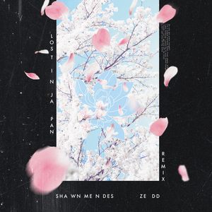
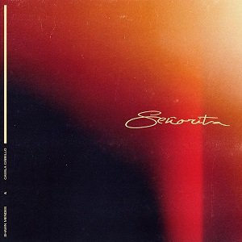
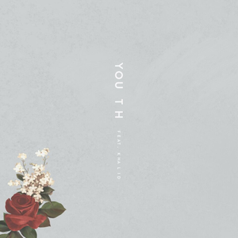

ALBUM: SHAWN MENDES
- "In My Blood"
- "Nervous"
- "Lost in Japan"
- "Where Were You in the Morning?"
- "Like to Be You" (featuring Julia Michaels)
- "Fallin' All in You"
- "Particular Taste"
- "Why"
- "Because I Had You"
- "Queen"
- "Youth" (featuring Khalid)
- "Mutual"
- "Perfectly Wrong"
- "When You're Ready"
TENDENCIAS
Shawn Mendes - Can’t Imagine
COLABORACIONES

En "Monster", Shawn Mendes y Justin Bieber cantan sobre los peligros de la vida y la incertidumbre en la industria de la música. Sirviendo como el segundo sencillo de Wonder, la pista encuentra a Mendes y Bieber colaborando por primera vez.
"MONSTER"

Es el tercer sencillo del álbum homónimo de Shawn Mendes, y su primera colaboración con Khalid, la gran sensación del R&B.
"YOUTH"

"SEÑORITA"

Es la primera colaboración entre el DJ ruso-alemán Zedd y el cantante de pop canadiense Shawn Mendes. Zedd comparte cómo surgió este remix con Shawn Mendes durante una entrevista con Billboard en los AMA de 2018.